En el mundo de la programacion para poder solucionar un problema primero tenemos que razonar como lo
resolveriamos en la vida real.
En lo personal suelo usar la frase "divide y vencerás" y la estrategia del patito de goma.
Supongamos que queremos sumar 2 numeros. Tu como lo harias?
Eso depende de tu propio razonamiento pero vamos a ejemplificarlo:
Sabemos que la suma no es mas que la adicion de un valor numerico a otro valor numerico.
Es decir: Si tenemos 2 y queremos agregarle 2, entonces por pura logica sabemos que vamos a obtener el
doble del valor original: 4
Otro ejemplo: Si yo a ti te dijera: Quiero que la palabra Momiji la inviertas como lo
harias?
Es un proceso bastante sencillo
El resultado final seria ijimom
De manera mas clara por si aun no te ha quedado del todo claro: Piensa en todo esto como una receta de cocina.
Ves como es de sencillo? No es nada complicado solo con saber que queremos encontrar y siguiendo una serie de pasos logicos podemos llegar al resultado que deseamos.
Y es que en nuestro mundo las ciencias basicas se riguen por ese unico principio: El seguir una serie de pasos logicos tal como el ejemplo de la suma.
Hagamos 2 ejercicios de practica:
1-) Una palabra palindroma no es mas que una palabra que se puede leer igual al derecho y al revés
Vamos a desglozar el primer ejercicio
Seguiremos la secuencia logica para que quede lo mas claro posible
Ahora empezaremos con la siguiente palabra: Papaya
2-) El segundo ejercicio nos dice que tenemos una lista de numeros y de el encontrar el numero mayor
[1, 2, 3, 12, 10, 50, 300, 33]
Empecemos:
Resultado: El 300 es el numero mas grande de la lista
Y con esto ya hemos llegado al final del primer tema a aprender.
Que hemos aprendido?
Ahora que ya hemos terminado esta primera parte ahora pasaremos al manejo de operadores logicos
Los operadores logicos son compuertas que se usan en la informatica para determinar si algo esta
ocurriendo si esta sucediendo
A nivel de silicio: Los operadores logicos son la forma en la que representamos el paso o el bloqueo de
voltajes dentro de la placa de la computadora
A mas alto nivel los usamos para determinar condiciones (Luego vemos que es una
condicion)
| AND | OR | NOT |
|---|---|---|
| El operador Y | El operador O | El operador NO |
|
El operador Y lo usamos dentro de una seccion que aprenderemos en un
futuro llamados condicionales
De manera breve y clara se usa para especificar o saber si 2 cosas ocurren al mismo tiempo: "Si vamos a ducharnos debemos tener agua Y (AND) jabón" |
El operador O lo usamos dentro de una seccion que aprenderemos en un
futuro llamados condicionales
De manera breve y clara se usa para especificar o saber si una condicion se cumple o se cumple una secundaria si la primera no se cumple "Vas a salir a la calle con shorts O (OR) con jeans?" |
El operador NO lo usamos dentro de una seccion que aprenderemos en un
futuro llamados condicionales
De manera breve y clara se puede decir que es "Lo contrario", es decir: invertimos el valor verdadero o falso de algo. Se que suena confuso pero mira el ejemplo abajo: "Si el usuario NO (NOT) esta logueado, entonces debe iniciar sesion" |
Una vez ya tenemos clara la parte de los operadores logicos
Que en resumen solo son compuertas logicas que se usan para determinar si algo ocurre, se cumple o
no
Ya podemos pasar a nuestra siguiente fase: LOS OPERADORES MATEMATICOS
Los operadores matematicos son los simbolos que usamos en las matematicas al momento de operar, sin embargo con un par de reglas extra y con un par de simbolos extras que nos facilitan el trabajo al momento de operar numeros.
| + | - | * | / | % | < | ≤ | > | ≥ | == | = |
|---|---|---|---|---|---|---|---|---|---|---|
| Suma | Resta | Multiplicacion | Divicion | Modulo | Menor | Menor o igual que | Mayor | Mayor o igual que | Igual | Asignacion |
| Como su nombre lo indica: Lo usamos para poder sumar valores numericos | Como su nombre lo indica: Lo usamos para restar valores numericos | Este operador lo usamos para multiplicar valores. A nivel logico una multiplicacion solo es una suma repetida varias veces | Este signo nos permite operar diviciones | El operador de modulo lo usamos para encontrar el resto o residuo de una operacion. Mas concreto una divicion. | Lo usamos para saber si un numero X es menor a un numero X | Lo usamos para saber si un numero X es menor o igual a un numero X | Lo usamos para saber si un numero X es mayor a un numero X | Lo usamos para saber si un numero X es mayor o igual a un numero X | El operador de igualdad lo usamos para saber si un numero es igual a otro numero. Su forma es la union de 2 signos de asignacion | El operador de asignacion lo usamos para asignar un valor a algo |
Si aun no los entiendes o sientes que no vas a encontrarle utilidad a esto pronto vas a entender
para que sirven y como trabajar con ellos!
Asi que tranquilo~ solo quedate con que podemos trabajar con valores numericos
Pseint es un lenguaje de pseudo-codigo usado en el mundo de la programacion para dar una introduccion a
los primeros que se inician en este mundo
Donde en vez de usar un lenguaje de programacion complejo con su sintaxis compleja y avanzada, se usa un
lenguaje con una sintaxis que esta en español para asi familiarizarnos en un futuro con lenguajes mas
complejos
Nota: como dato curioso pseint es de origen latinoamericano, mas concretamente de
origen Argentino
De manera breve solo quedate con que Pseint solo es un lenguaje de pseudo-codigo que usaremos para pulir
nuestra logica de programacion antes de pasar a lenguajes mas complejos. Cabe aclarar que no nos vamos a
centrar en las herramientas de Pseint ni en sus funciones como programa. Solo lo usaremos para ejecutar
codigo.
Si deseas aprender mas sobre la herramienta puedes consultar la pagina principal o buscar recursos en
internet
Voy a ser bastante breve en esta parte ya que la idea es no perdernos en trivialidades o tecnicismos
Primero iremos a la pagina principal de pseint donde lo descargaremos:
Pagina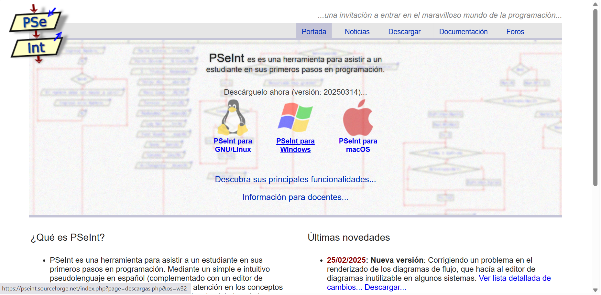
Vamos a seleccionar la opcion de windows aunque nosotros debemos seleccionar la del OS que usemos
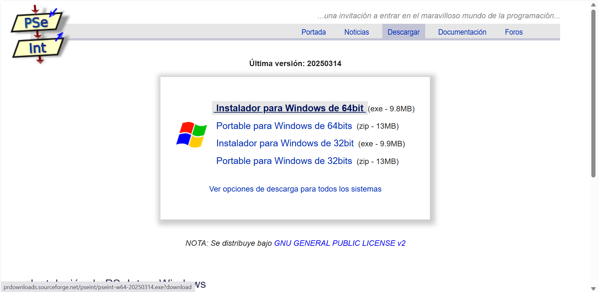
Lo descargaremos, ya aqui es donde simplemente ubicaremos el instalador en nuestra PC
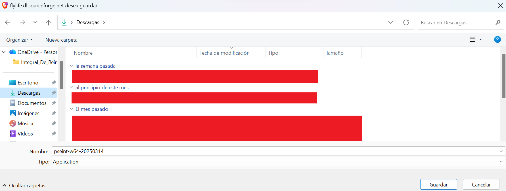
Una vez descargado el instalador. Ahora vamos a ejecutarlo como administrador para otorgar permisos
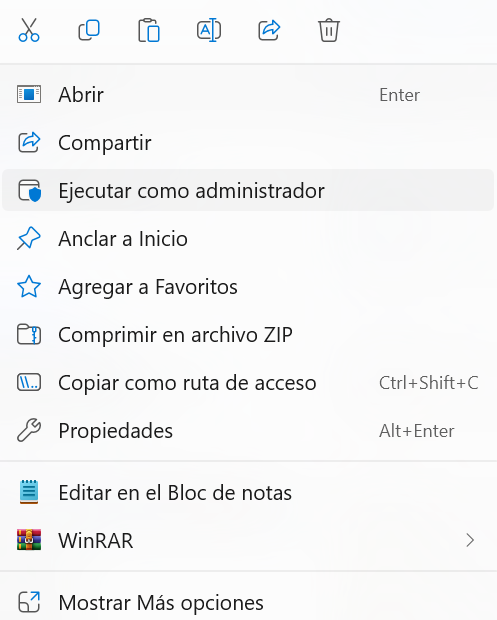
En esta parte empezamos con la instalacion del programa
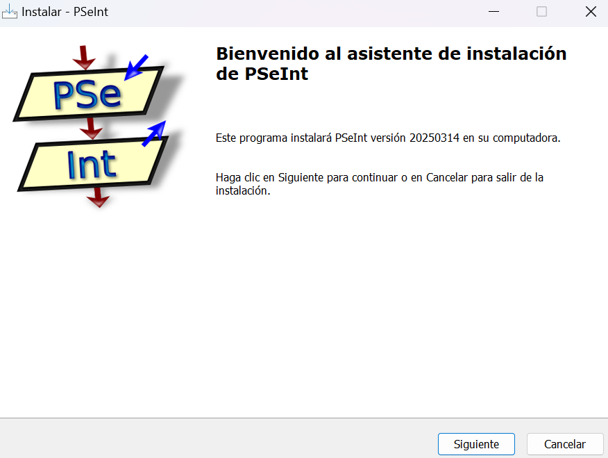
Aceptamos para poder continuar con el proceso de instalacion
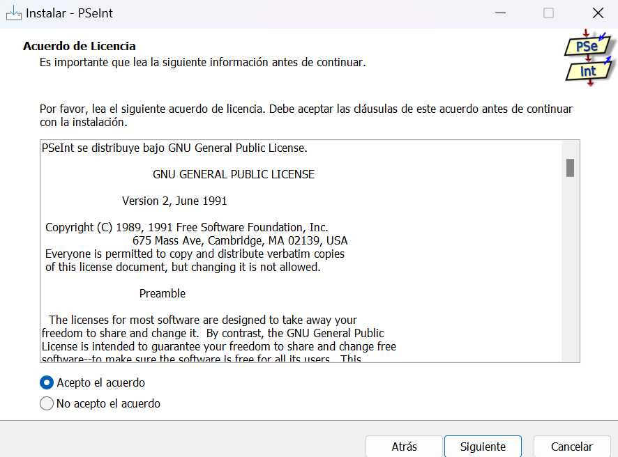
Seleccionamos donde se instalara todo dentro de nuestra PC
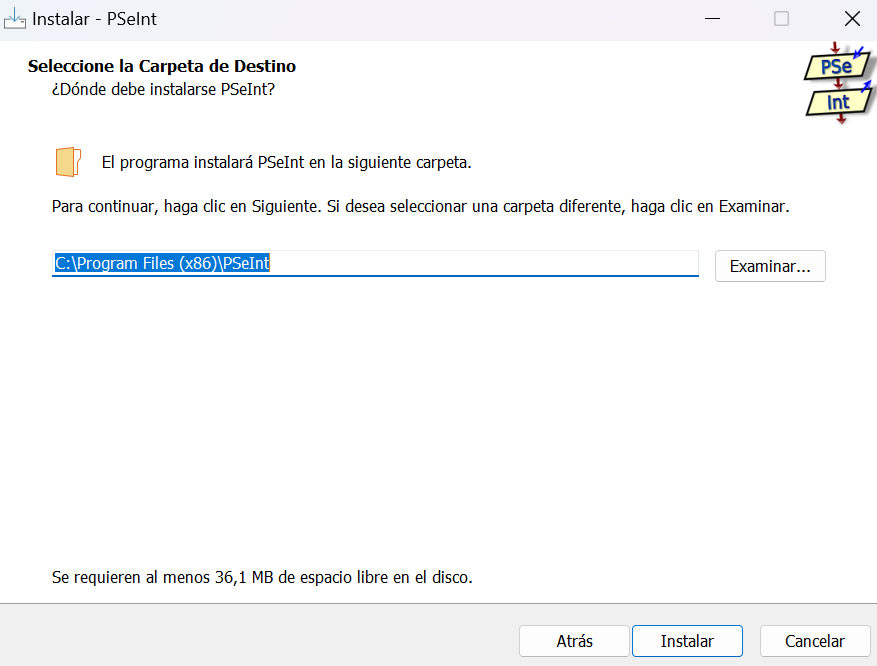
Una vez especificamos donde instalarlo, continuamos y ya empieza el proceso de instalacion
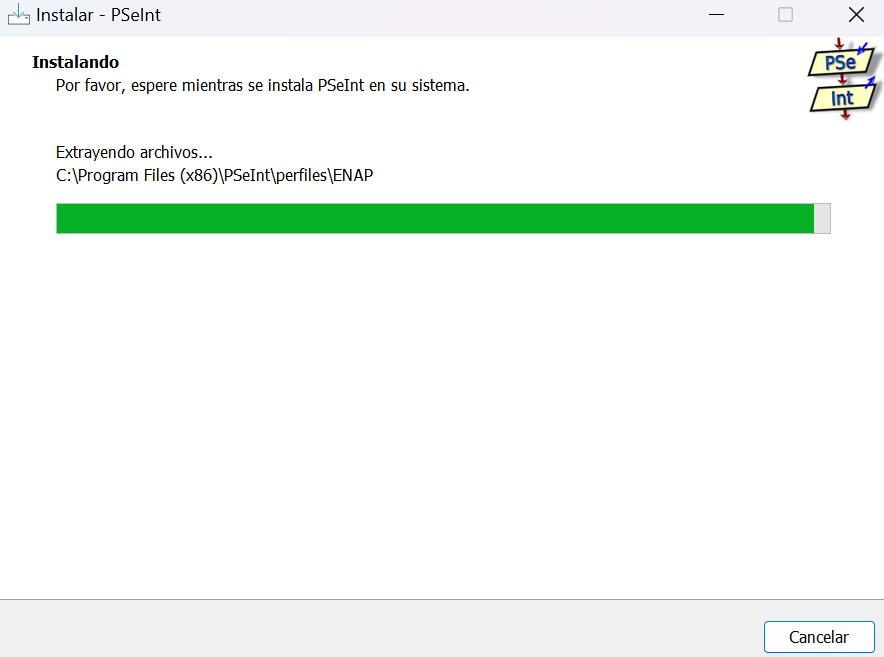
Tras la instalacion simplemente ya podemos abrir el programa
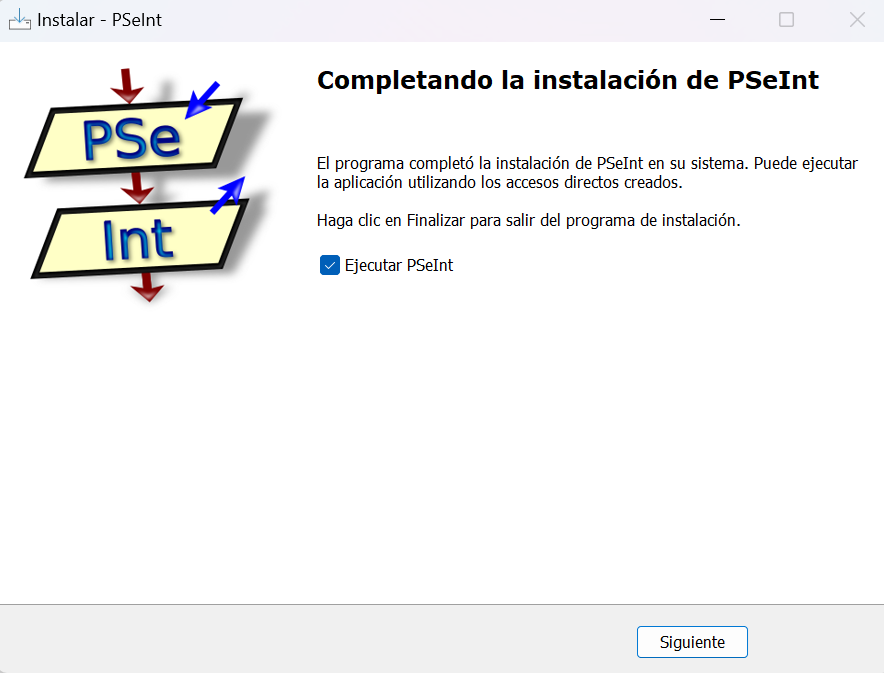
Y asi es el programa ya abierto. El entorno donde empezaremos a trabajar
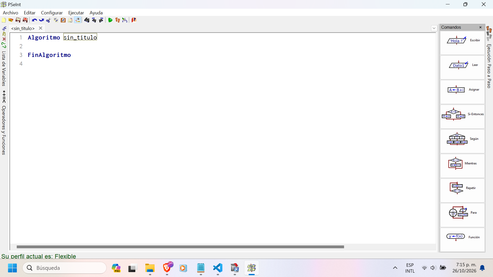
Y con esto, ya hemos terminado la introduccion a pseint y como instalar el entorno de trabajo. Vamos a proceder con la siguiente etapa: VAMOS A ESCRIBIR NUESTRO PRIMER PROGRAMA! UN HOLA MUNDO!. Asi es como empezamos en esto.
Nuestro primer programa va a ser un hola mundo.
Dentro del mundo de la programacion: Cada vez que vamos a aprender en un nuevo lenguaje de programacion
hacemos un "Hola Mundo". Solo es un programa que muestra ese mensaje en pantalla y simplemente es una
forma de saber que todo esta bien configurado o instalado. Nada complicado ni dificil de entender,
solamente un mensaje en pantalla. Proseguimos.
Vamos a escribir el siguiente script. Para poder ejecutarlo debemos guardar el archivo y nombrarlo como deseemos. En la parte inferior desglozamos cada parte de el.
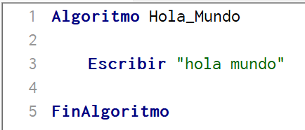
Nuestra salida de datos será la siguiente:
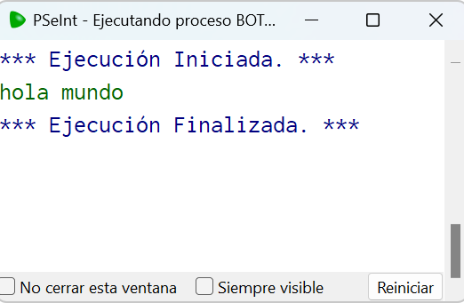
Nada dificil verdad? es hora de continuar...
Vamos a ser breves y directos en esta parte ya que es algo corta en cuanto a su explicacion
Las variables no son mas que espacios en la memoria que usaremos para almacenar datos, datos con los que
posteriormente podemos trabajar, cambiar o eliminar
Piensa en una variable como una caja donde puedes almacenar cosas. Sin embargo hay que aclarar algo antes de continuar
Sabemos que una variable es un espacio en la memoria donde podemos guardar datos, pero debemos enseñarte que es un tipo de dato:
Un tipo de dato es una forma en la que la computadora recibe un valor y esta lo interpreta
Si yo le paso a la computadora un 1 ella lo va a interpretar como un tipo de dato numerico de tipo entero
Ves como es de facil? Voy a ponerte los tipos de datos que manejamos en programacion y los que manejamos en pseint
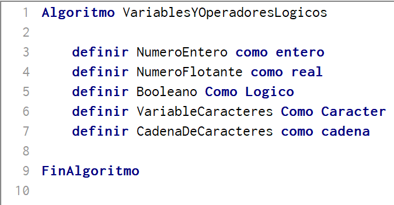
De esta manera se declaran las variables en pseint. Las usaremos en todo momento para poder trabajar en el desarrollo de cualquier programa que hagamos, ya que de ello depende el resultado que deseemos
Los datos en pantalla es lo que nosotros podemos observar tras realizar una operacion. Ya vimos de antemano como hacer algo asi: Mostrando un "Hola mundo" tras terminar de ejecutarlo. Nada complicado
Vamos a ver un par de ejemplos. Cabe destacar que en este sitio no vamos a tratar el tema de los errores. Seria bueno que lo aprendas en sitios mas especializados
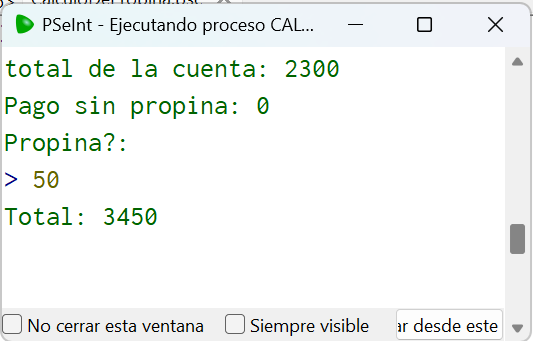
Puedes observar que solo son algunas palabras en una ventana.
Como ya sabes: Para hacer eso simplemente usamos el boton Escribir para mostrar
contenido en la ventana. Esto tambien sirve para mostrar el contenido que se guarda dentro de las
variables
En un programa, el usuario es el cliente que va a usar nuestro programa por lo que los datos ingresados va a ser por el
De manera breve: Los datos por defecto que nosotros ponemos no van a ser necesarios o algunos datos que pondremos serán minimos en el funcionamiento del programa. Todo lo demás corre por el lado del cliente
Veamos esto con un ejemplo:
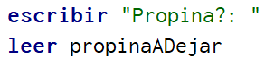
En pocas palabras: Escribir y Leer nos va a permitir ingresar datos por teclado. Ojo, el dato debe ser almacenado en alguna variable o este se perderá
Ahora que ya tenemos una buena base teorica ya podemos empezar a crear por nuestra cuenta. La lista de ejercicios esta en la parte inferior
Bueno! ha sido un proceso largo tras los ejercicios no? puedes tomarte un respiro, ir a tomar agua, enfriar tu cerebro o entretenerte con algo!
Ahora vamos a entrar a un nuevo tema de estudio: Los condicionales.
Los condicionales son estructuras de control que permiten la toma de desiciones dentro de un programa.
Como tu harias que si ocurre X cosa entonces ocurra esta X cosa?
Para eso existen los condicionales!. Si un usuario tiene 18 años entonces puede registrarse si no es asi
entonces no puede continuar
La estructura de un condicional es la siguiente
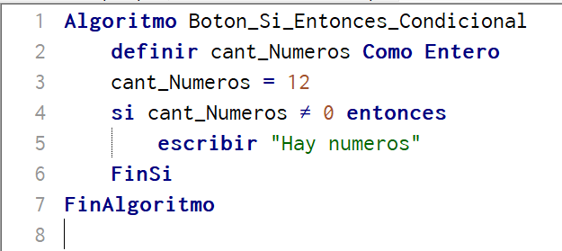
SI la variable cant_Numeros es diferente o NO ES 0, ENTONCES mostramos el mensaje en pantalla
Cabe resaltar que durante las condiciones vamos a usar los operadores logicos y mas de una condicion. Vamos a ejemplificarlo:
Dentro de los condicionales tambien tenemos una elemento mas. El Sino, la usamos cuando la condicion no se cumple y queremos realizar algo mas si no se cumple
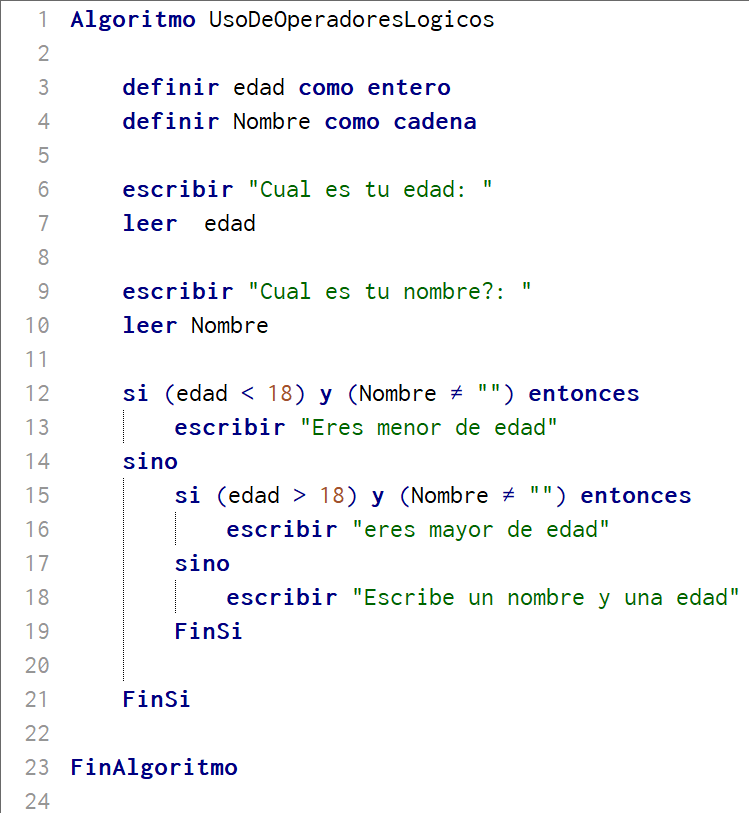
A diferencia de un lenguaje de programacion mas complejo y profesional donde usamos algo llamado else if, elseif elif; acá en Pseint no tenemos algo asi. Debemos emularlo usando una subrutina Sino con un condicional interno como se aprecia en la imagen
Continuemos con otro condicional: El condicional Segun funciona de manera similar al condicional Si-Sino sin embargo esta es mas restrictiva ya que el valor del condicional debe ser exacto o saltará error
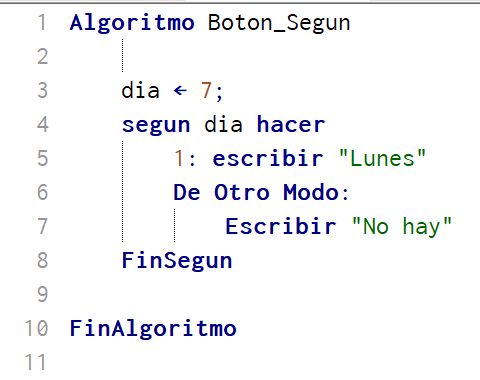
El condicional Segun da un resultado dependiendo del contenido de la variable. Es restrictivo ya que el valor debe ser exacto al de la condicion, no permite operadores logicos ni operadores matematicos
En el ejemplo anterior como puedes ver el condicional es de un UNICO valor
Ahora que ya hemos entendido como manejar todos los condicionales podemos pasar a las practicas!~
Muy bien, seré breve en esta parte ya que acá empezamos a tomar desiciones dentro de nuestro programa lo que lo hace mas complejo e interesante
Los bucles son uno de los temas mas complicados al momento de aprender a programar pero es la comumna
vertebral detrás de muchas cosas dentro de los programas.
Para darte una idea: Los bucles nos ayudan dentro de la simulacion de conceptos fisicos o quimicos hasta
la ejecucion constante de un videojuego, ya que sin un bucle las operaciones que se deben estar
realizando cada segundo dentro de la computadora; no se podrian ejecutar correctamente
Asi de importantes son los bucles
Ya te he dicho lo importante que son los bucles pero... Que que son como tal los bucles?
Un bucle es una secuencia que se repite constantemente mientras una condicion sea verdadera hasta que su
condicion deje de serlo y pase a un valor en falso
De manera mas breve: Si X condicion se cumple entonces el bucle va a estar ejecutar hasta que la
condicion deje de cumplirse
Los bucles los usaremos en un futuro cuando estemos manejando listas como arrays unidimencionales o
arrays bidimencionales. Tambien cuando terminemos de dominar pseint usaremos bucles en un lenguaje mas
avanzado para visualizar de mejor forma todo esto
Por ahora quedate con que los bucles son muy importantes y los iremos viendo paso a paso
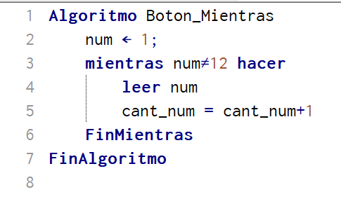
Voy a explicar ese fragmento de codigo
Tenemos un 2do bucle y se podria decir que es el principal sobre todos los demás ya que tiene una cantidad de funcionalidades mayor
El bucle Para o tambien conocido en otros lenguajes de programacion como el bucle For
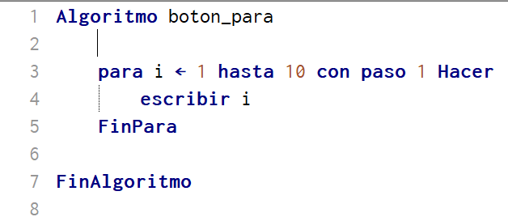
El bucle Para se usa cuando sabemos exactamente hasta donde queremos llegar. Muy usado para recorrer listas.
Continuamos con el ultimo bucle que poseemos dentro de la programacion: el bucle Repetir-Hasta_Que en lenguajes de programacion mas avanzados lo conocemos como bucle do-while. Lo usamos cuando necesitamos que se realice si o si una operacion y la condicion se verifique. Casi no se usa salvo en programas basados en terminal de comandos donde se agregan menus de opciones, sin embargo en lo personal yo uso el primer bucle y para operaciones mas complejas uso el 2do bucle.
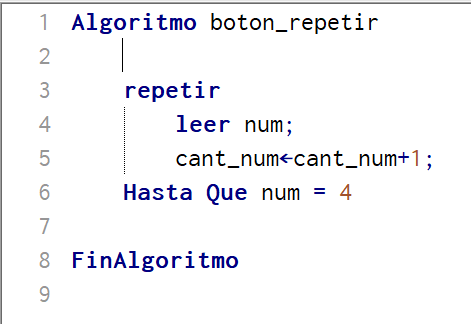
El bucle anterior es mas sencillo de entender. Tiene un funcionamiento similar al del primer bucle sin embargo en este debemos primero ejecutar el bloque y luego se verifica la condicion
En lo personal casi nunca uso este bucle, ya que no le encuentro un funcionamiento practico en las cosas
Quedate solo con los 2 primeros ya que son los mas fundamentales
Los ejercicios son bastante sencillos. En todo caso puedes comunicarte con el desarrollador para aclarar preguntas o dudas
Las estructuras de datos se usan en la programacion para almacenar multiples valores. Quedate con la idea de que son una lista de valores con las que podemos operar y trabajar. O como tal una variable muy grande y con muchos espacios especificados por nosotros. Nada dificil de entender!
Las estructuras de datos se pueden dividir en: unidimencionales, bidimencionales y multidimencionales aunque por lo general solo se usan las 2 primeras para mayor comodidad al programar. Sin embargo tengo que especificarte que depende totalmente de lo que debes hacer.
Algo mas: Para recorrer, observar u obtener el valor de una posicion dentro de una lista tenemos que usar un bucle
Las listas unidimencionales solo poseen una sola ilera de datos que se extiende de izquierda a derecha conteniendo sus valores en cada posicion dentro de la lista
[1, 2, 3, 4, 100, 200, 500, 600, 1000]
Al momento de crear una lista esta solo recibe datos de ese unico tipo de dato especificado
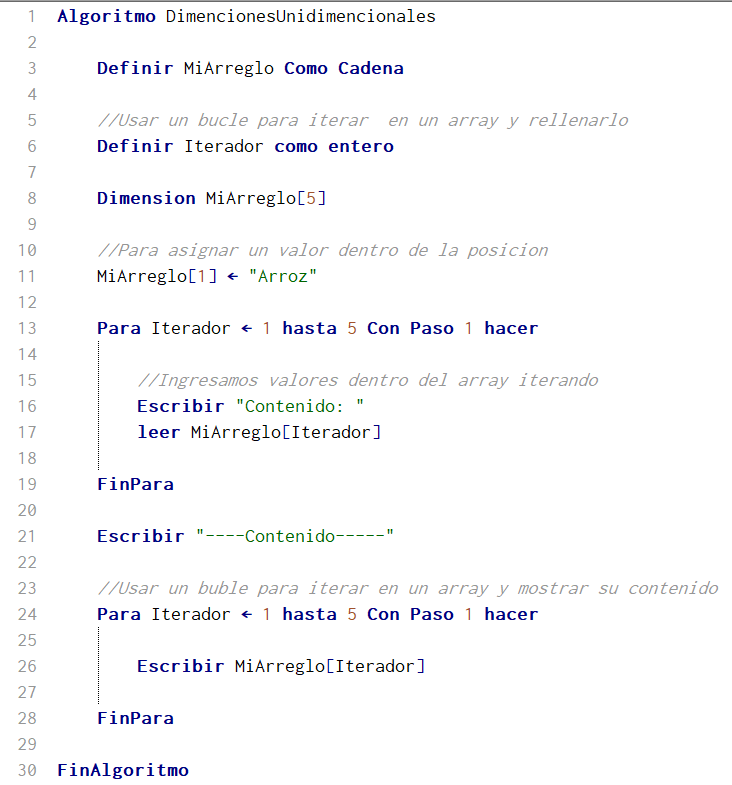
Los arrays bidimencionales estan compuestos por filas (de izquierda a derecha) y columnas (de arriba hacia abajo). Cada espacio puede almacenar un valor. Para recorrer un array bidimencional usamos un bucle anidado, es decir un bucle dentro de otro bucle ya que las filas y las columnas se recorren de manera separada
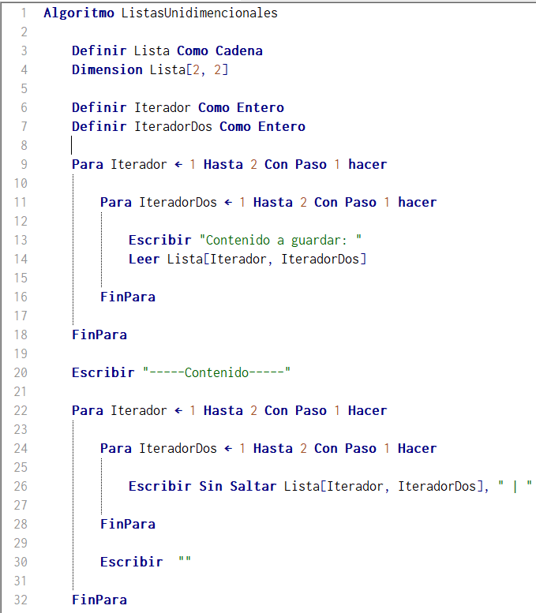
Las listas multidimencionales son listas en mas de 3 dimenciones. A diferencia de las bidimencionales que poseen filas y columnas, mientras que las multidimencionales ya se extienden a mas espacios en el fondob Estas listas se recorren usando multiples bucles anidados, dependiendo el nivel de dimenciones con el que se construya la lista.
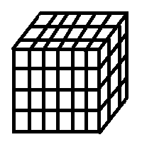
Los siguientes ejercicios de listas son los que desarrollaremos. Recuerda que si no puedes realizarlos, comunicate con el desarrollador, accede al codigo que podrás encontrar en la parte inferior o busca mas recursos en internet
Las funciones son bloques de codigo que contienen instrucciones que se pueden llamar. Estos pueden o no retornar valores y a su vez estos pueden recibir o no recibir parametros, los parametros son las instrucciones que podemos o no pasarles por parentesis al momento de declarar la funcion. Estos datos son utilizados posteriormente para trabajarlos dentro de la funcion. Bastante sencillo de entender no? Veamos un par de ejemplos
Las funciones con retornos se hacen cuando necesitamos retornar un valor o resultado dado por las operaciones internas de la funcion y operarlos en otras partes del codigo o programa
Como vemos en este ejemplo: Vemos que retornamos la operacion de encontrar el area de un triangulo. El valor retornado podemos usarlo en otras funciones.
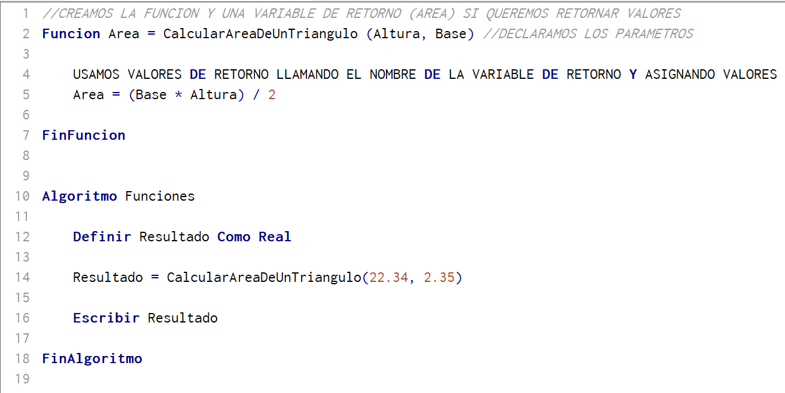
Son usadas para solo realizar una operacion interna sin necesidad de usar sus valores de retorno para el trabajo en otras partes del codigo. En lo personal lo uso simplemente para operar o trabajar en algo y solo llamarla al metodo principal y ver los resultados
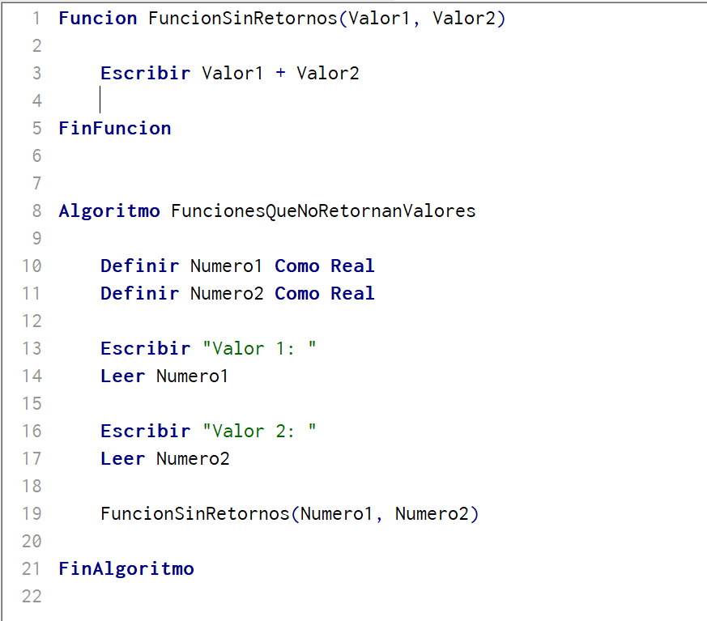
Las funciones sin parametros son aquellos que no reciben valores de ninguna parte de la parte del codigo y solo trabaja con lo que tenga en su interior. Otra forma en la que podemos llamar a las funciones sin parametros es: Subprocesos
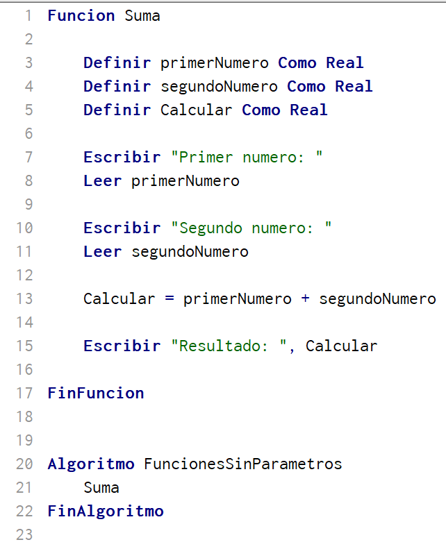
Las funciones con parametros son aquellas funciones que reciben valores de manera externa y opera con ellos. Los parametros se pasan por los ya conocidos ()
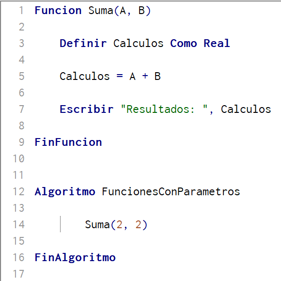
Si has llegado hasta aquí dejame decirte: FELICIDADES, significa que has completado y entendido los conceptos principales dentro de la programacion, la realizacion de los ejercicios y la consolidacion de todo lo creado. Es de mi agrado informarte que en esta ultima parte realizaremos programas mas avanzados donde integraremos todo, además de que ya puedes solicitar tu certificado